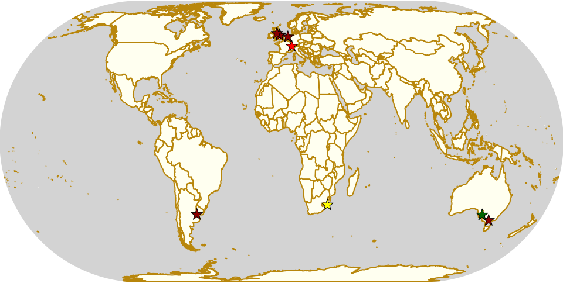

Weekend Highlights: 24 Nov 2019 (SUNDAY)
This is the Sunday addendum to our weekly highlights, giving events on the 24th a bit of space to breathe!
The rules are, as usual: highlights limited to 1 event per country, with an "extra" event allowed for a different kind of fixture (so, 1 tournament and 1 bootcamp), or if they involve Scottish leagues (since we are the Scottish Roller Derby Blog). Other notability might also allow the extra event - great posters, notable teams, etc. (League birthdays may count as "special" enough, at our discretion ;) )
In a bid to make this list as useful as possible, we've avoided links to Facebook except where noted. (Links to Teams are to non-Facebook resources - Instagram, or actual team pages - we'd strongly recommend that Teams get themselves an actual webpage [we can help host one if you need help]).
Locations are roughly organised East-West (with things before the weekend out sequence at the start).
Sun: Preston, VIC, Australia
Victorian Men's Roller Derby host a double-header of End of Year games.
- Valkyries (VMRD O) versus Potluck team
- Berserkers (VMRD B) versus Potluck team
Event starts: 1030 Sunday
Venue: 62-64 Oakover Rd, Preston, VIC, Australia
Sun: Adelaide, SA, Australia
Lil Adelaide Rollers end the season with their 2019 "Christmas Bout", as their two teams, the Quad Monsters and Skool of Blokk face each other on track. We're also promised some "special guests", so if you're at all curious, turn up to discover.
- Quad Monsters (Adelaide J Home) versus Skool of Blokk (Adelaide J Home)
Event starts: 1600 Sunday (doors open)
Venue: Lefevre Community Stadium, 541 Victoria Rd, Adelaide, SA, Australia
Sun: Durban, South Africa
Durban Roller Derby continue their monthly Social Beach Skates, open to all people on human-powered wheels.
Event starts: 0800 Sunday
Venue: Afro's Chicken Shop, South Beach, Durban, KwaZulu-Natal, South Africa
Sun: Uttigen, Switzerland
Mens Roller Derby in Switzerland are holding their 4th open training practice, open to all abilities.
Event starts: 1800 Sunday
Venue: Rollhockeyhalle Uttigen, Uttigen, Switzerland
Sun: Stavanger, Norway
Oil City Rollers host a meet-and-greet and fundraiser at the Lighthouse at Tungenes, which is also a cultural museum.
Event starts: 1200 Sunday
Venue: Tungenes fyr, Tungenesveien 217, Randaberg, Norway
Sun: Amsterdam, Netherlands
Amsterdam Roller Derby host a triple header event this Sunday, as their BattleStars take on Kaiserslautern, and "Team World" (an open subscription exhibition team)
- Teams:
- Kaiserslautern Roller Derby versus Team World (open subs)
- BattleStars (Amsterdam B) versus Kaiserslautern Roller Derby
- BattleStars versus Team World
Event starts: 1000 Sunday (doors open)
Venue: Sportpark de Weeren, 5, 1027EC Amsterdam, Netherlands
Sun: Wakefield, UK
Wakey Wheeled Cats host "The Fightmare Before Christmas", a Halloween-versus-Christmas themed tournament. Two groups - one of Halloween themed teams, and one of Christmas themed teams - play each other for ranking, before competing against their opposite numbers in the other group.
- Halloween Group
- Sons of Witches
- Knights of the Living Dead
- Ghouls Just Wanna Have Fun
- Christmas Group
- Noel-it-Alls
- Naughty List
- Sleigh All Day
Event starts: 0930 Sunday (doors open)
Venue: Lightwaves Leisure Centre, Lower York St, Wakefield, UK
Tues: Sheffield, UK
Sheffield Steel Roller Derby host the November edition of their MegaScrims, open to all public scrimmage events. This one has a Gunpowder Plot theme, only 20 days after the event ;)
- The Gunpowder Plotters versus Parliament (open mixed scrim teams)
Event starts: 1900 Tuesday
Venue: Skate Central, 1 Queens Road, Sheffield, UK
Sun: Workington, UK
Border City Roller Derby host their first ever home game, and it's a double header! Due to venue limitations, this is not open to the public, but it's still an important landmark for any league. As such, this event is also missing any public record at all, other than this entry.
- Border City Roller Derby (Carlisle) versus Durham City Rolling Angels
- Furness Roller Derby (Barrow-in-Furness) versus "North East Challenge Team"
Event starts: ??
Venue: Workington, Cumbria, UK
Sun: Lanús, Argentina
Colmena Roller Derby host DerbyStation 2019, a double-header of Season-themed bouts, with mixed teams.
- Team Invierno versus Team Verano [WFTDA-policy teams, BC level]
- Team Primavera versus Team Otoño [OTA-policy teams, ABC level]
Event starts: 1300 Sunday (first whistle)
Venue: Club le Amistad, Cordero 675, R. de Escalada, Lanús, Argentina
Sun: San José, Costa Rica
Dark Side Roller Derby host their second "introductory workshop" on Roller Derby, open to anyone who wants to know more about the sport (and maybe sign up). A limited amount of kit is available for attendees who don't have their own.
Event starts: 1100 Sunday
Venue: Polideportivo Aranjeuz, San José, Costa Rica